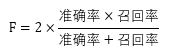
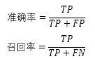
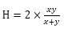

一、 概述
获取网页并从中提取人类语言数据；
利用NLTK完成自然语言处理中的基本问题；
在NLP中使用上下文驱动的方法进行分析；
使用NLP来解决分析性问题，比如生成文档摘要；
度量涉及预测分析领域质量的准则。
二、 抓取、解析、爬取网页（次重点）
一个网页抓取的出色工具：基于Java的boilerpipe库。
一个叫做python-boilerpipe的Python包封装了它。
HTML、XML、XHTML的各自优点。
1. 网页爬取中的广度优先搜索
（网页爬取的基本算法）
有固定开始节点和一定约束条件的树状或者图状结构，开始节点时最初的网页，相邻节点时超链接的网页。
深度优先搜索是常见的代替广度优先搜索的策略。二者的选择取决于可用的计算资源、特定的领域知识，甚至理论层面的考虑。
（线程池技术可以分担广度优先搜索中的I/O速度约束）
三、 通过解码语法来探索语义
1. TF-IDF与余弦相似度的缺陷
不要求深入了解数据的语义，抛开了很多关键的上下文环境。
具体：利用非常基本的句法，用空格分割单词词项（token），来把其他不透明的文档分解为“词袋”，并使用频率和简单的统计相似度度量来确定数据中的哪些单词（token）可能是重要的。但是它并没有真正告诉你某个文档上下文中出现的单词的意义。
2. 逐步讲解自然语言处理
（使用NLTK的NLP）
NLP流程有下面几步：
a. 句末检测
b. 切词
c. 词性标记
d. 分块
e. 提取
(1) EOS检测
句子通常是代表思维的逻辑单元，所以它们往往都包含非常适合于进一步分析的可预见句法。
(2) 切词
切割单个句子，把它们分成单词（token）。
(3) POS标记
把词性信息分配给每个单词。
(4) 分块
分析一个句子中所有被标记的单词，聚集表达逻辑概念的复合单词——这是和统计并分析搭配词完全不同的方法。（自定义句法：NLTK的chunk.RegexpParser）
(5) 提取
这一步包含每个分块的分析，以及把这些分块进一步标记为命名实体。如人、组织、位置等。
3. 人类语言数据的句子检测
（细粒度、非监督式学习算法）
（句子检测器产生的错误会向前传播，可能会约束其它NLP栈产生的质量上线）
4. 文档摘要
执行相当好的句子检测作为挖掘非结构化数据的NLP方法的一部分，使得一些非常强大的文本挖掘功能成为可能。1958年H.P.Luhn在一篇专题文章中描述了归结为过滤句子的技术，这些句子包含最常出现的单词，这些单词是彼此邻近的。
(1) Luhn的算法
Luhn算法的基本前提是文档中的重点句子包含经常出现的单词的句子。
a. 消除停用词（停用词一般是填充器，一般不值得分析）
b. 选择合适的N值，确定N个重点词
c. 对每个句子应用启发式，过滤句子的一些自己来把它作为文档的概要或摘要（需要使用score_sentences函数来计算每个句子的得分）
d. 根据得分返回句子。（这里可以根据得分的标准差和均值来返回经过阈值过滤后的句子，也可以直接返回前N个句子）
四、 以实体为中心的分析：范式转换
思想：搜索的对象是一个实体（然后可以用标签云展示），而不只是返回一个包含关键字的文档列表。
1. 领会人类语言数据
在以实体为中心的基础上，把动词考虑进去并计算主谓宾这个三元组，这样就能知道哪些实体和哪些实体交互，以及这些交互的本质。
（噪声在分析结果中会不可避免地存在，噪声的消减将会带来很有价值的结果，对噪声的研究也能帮助你设计出有效的启发式方法）
五、 人类语言数据处理分析的质量
a. F1得分（常见的用于计算精确度的公式）

其中：

TP：判断为真的正确率。正确地标识为术语的实体。
FP：误报率。标识为实体，却不是实体的术语。
TN：没有标识为实体，实际上也不是实体的术语。
FN：漏报率。是实体，却没有被标识的术语。
确切地说，F1被认为是准确率和召回率的调和函数，其中任何两个数：x和y的调和平均数定义为：。当准确率和召回率都很完美时，F1的值为1.0，当二者都很低时，F1的值会接近于0。
b. 商业公司方法的评估
很多最具竞争力的技术栈被NLP领域的商业公司采用，它们使用了先进的统计模型，根据监督式学习算法来处理自然语言。监督式学习方法是你提供包括输入和预期输出的训练样本的重要方法，这样该模型就能够较为精确地预测三元组了。如果该模型在训练数据中运行良好，在从未见过的样本中无法良好运行，通常说它遇到了过渡拟合训练数据的问题。
一种常见的度量模型效力的方法叫做交叉验证。在这种方法中，训练数据的一部分内容（比如三分之一）专门用于测试模型，剩余的数据用于训练模型。